|
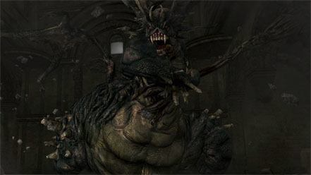
(Demônio do Asilo)
|
O grande demônio encontrado durante o tutorial no Asilo dos Mortos-Vivos do Norte.
Este chefe é muito semelhante ao Vanguard em Demon's Souls tanto no estilo de ataque
quanto na aparência da história.
|
|
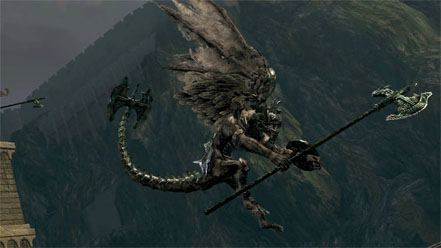
(Gárgula-de-sino)
|
Localizado no telhado da Paróquia dos Mortos-Vivos, guardando o caminho para um dos Sinos
do Despertar. Não apenas um, mas dois desses demônios que respiram fogo devem ser mortos
para o jogador prosseguir
|
|
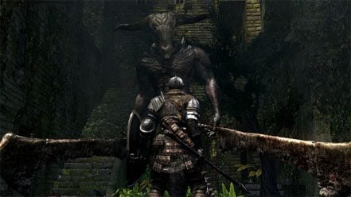
(Demônio capra)
|
O Demônio Capra é o chefe do Lower Undead Burg. Você pode chegar até ele indo para a esquerda,
até o final da rua principal (passando pelos Assassinos Mortos-Vivos e Cães Mortos-Vivos),
ou passando pelo atalho na hidrovia no Santuário Firelink depois de desbloqueá-lo.
|
|
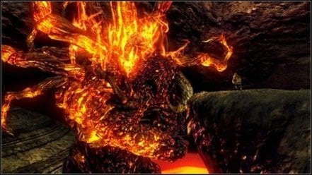
(Descarga incessant)
|
Não só um imponente chefe baseado em fogo encontrado nas Ruínas demoníacos, Incessante Descarga,
como seu nome pode sugerir, é a fonte do fluxo de lava. Matá-lo cessará a descarga de lava nas
partes inferiores das ruínas, permitindo o acesso às áreas mais profundas do mapa, e o progresso
na campanha.
|
|
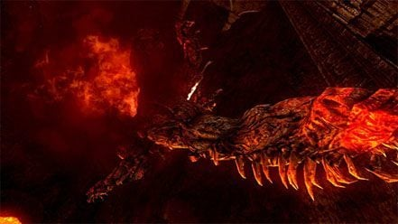
(Demônio da centopeia)
|
Este demônio é um grande inseto como uma criatura que defende o caminho para Izalith Perdido.
Seus braços e cauda são centopeias vivas separadas. O chefe tem a tendência de ficar na lava
depois de andar pelo portão da neblina e usar repetidamente seu ataque.
|
|
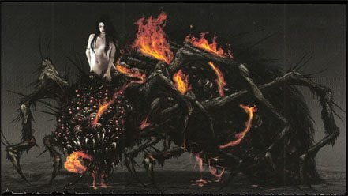
(Bruxa do Caos Quelaag)
|
Um demônio meio-mulher, meio-aranha localizado em um covil perto do fundo de Blighttown. Uma
das filhas da Bruxa de Izalith, transformada em um monstro pelas Chamas do Caos. Seus irmãos
notáveis são "A Bela Dama" e "Dispensa Incessante". Ela guarda o segundo Sino do Despertar,
e a entrada para o domínio de sua irmã.
|
|
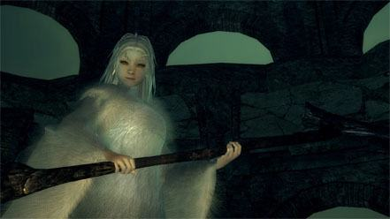
(Priscilla crossbreed)
|
Meio chefe dragão encontrado em Painted World of Ariamis. Chefe opcional, ela empunha uma
foice gigante e tem a capacidade de ficar invisível. Se você não quiser lutar com ela,
basta passar por ela depois de falar com ela, e seguir em direção à borda aberta para
desencadear uma cutscene e seu retorno a Anor Londo. (falar com ela não a torna agressiva)
|
|
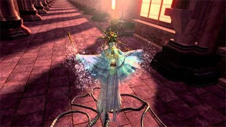
(Sol Escuro Gwyndolin):
|
O último nascido de Lord Gwyn, Gwyndolin é o líder da aliança Lâmina da Lua Negra e a única divindade
remanescente em Anor Londo. Os seguidores de Gwyndolin são poucos, mas suas tarefas são de vital importância.
Embora tenha nascido homem, devido à magia e associação com a lua, Gwyndolin foi criado como uma filha.
|
 (Demon Firesage)
(Demon Firesage)
|
Um grande demônio encontrado no final das Ruínas demoníacos. Ele se assemelha muito ao Demônio Perdido e Demônio do Asilo,
embora seu comportamento e habilidades estejam muito mais intimamente relacionados com o primeiro dos dois chefes
|
|
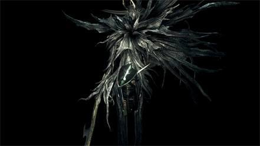
(Quatro Reis)
|
Os remanescentes wraiths dos quatro líderes das Ruínas de New Londo que ficaram escuros depois de serem tentados com a arte
do dragão da vida.
|
|
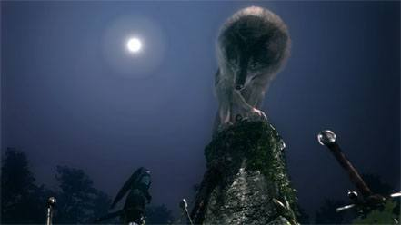
(Grande Lobo Cinzento Sif)
|
Um lobo muito grande que reside em um cemitério sereno, do outro lado do rio do Jardim darkroot. Ele também pode ser alcançado
subindo a escada perto da Hydra na Bacia da Raiz Escura.
|
 (Gwyn Senhor de Cinder)
(Gwyn Senhor de Cinder)
|
Gwyn, Senhor de Cinder era o maior dos deuses e um poderoso guerreiro. Ele era conhecido como o Senhor da Luz do Sol e liderou os
esforços para acabar com a Era dos Antigos, juntamente com o Senhor da Feiticeira Nito, a Bruxa de Izalith, e o dragão-traidor,
Seath, o Scaleless. Liderando seus cavaleiros, ele levou os deuses à vitória e supervisionou a Era do Fogo. Apesar de legar elementos
de sua alma aos Quatro Reis e Seath, o Scaleless, sua alma permanece "uma coisa poderosa de fato".
|
 (Golem de Ferro)
(Golem de Ferro)
|
O último julgamento da Fortaleza de Sen, o Golem de Ferro. O chefe está localizado em uma ponte no topo da fortaleza,
e deve ser derrotado para chegar a Anor Londo.
|
|
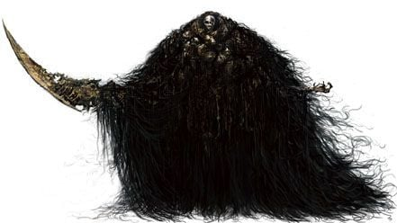
(Nito)
|
Detentor de um dos quatro Lordes Almas, o SenhorNito estava entre os lordes para travar uma guerra contra os dragões.
Como Senhor da Morte, Nito governa sobre os mortos nas Catacumbas e reside dentro da Tumba dos Gigantes. Seu exército
de esqueletos guarda sua tumba, enquanto seus Servos Gravelord espalham a morte através dos Olhos da Morte.
|
|
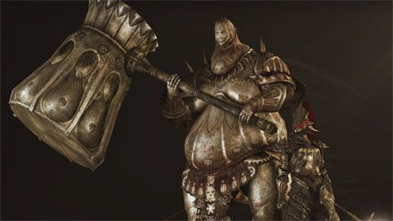
(Ornstein e Smough)
|
Ornstein é o capitão dos Quatro Cavaleiros de Gwyn Lord de Cinder, servindo ao lado de Artorias, o Abysswalker, Lord's Blade Ciaran, e Hawkeye Gough.
Como o nome dele sugere, ele era um matador de dragões honorário.
|
 (Cata-vento)
(Cata-vento)
|
Pinwheel é o chefe que está nas profundezas das Catacumbas, e sem dúvida o chefe mais fácil de todo o jogo.
Você pode encontrar sua câmara além de uma parede de neblina, através do chão do vale contendo ferreiro
Vamos no fundo das Catacumbas que está sendo patrulhado pelos Esqueletos da Roda.
|
 (Seath, o Scaleless)
(Seath, o Scaleless)
|
Envy e amargura; palavras usadas para descrever a traição de Seath de sua própria espécie, e,
em sua própria espécie, para ao contrário de seus irmãos, Seath nasceu sem as escamas
de pedra dos Dragões Eternos.
|
 (Demônio de Touro)
(Demônio de Touro)
|
Um demônio minotauro encontrado no topo de um estreito muro de castelo no Burg dos Mortos-Vivos,
na estrada para a Paróquia dos Mortos-Vivos. Semelhante ao Sino Gárgula encontrado mais tarde,
o Demônio de Touro não aparece imediatamente quando o hospedeiro passa pelo portão da neblina.
|
|
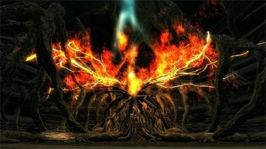
(O Leito do Caos)
|
Em uma tentativa fútil de prolongar a Era do Fogo, a Bruxa de Izalith tentou recriar a Primeira Chama.
O ritual foi um fracasso e seu poder formou um leito de vida que se tornaria a fonte de todos os demônios;
prender duas de suas filhas nas esferas de cada lado, e se dentro dele.
|
|
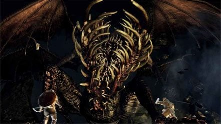
(Dragão Escancarado)
|
O Dragão Escancarado é o chefe nas profundezas, e lhe dá a chave para a entrada superior de Blighttown.
|